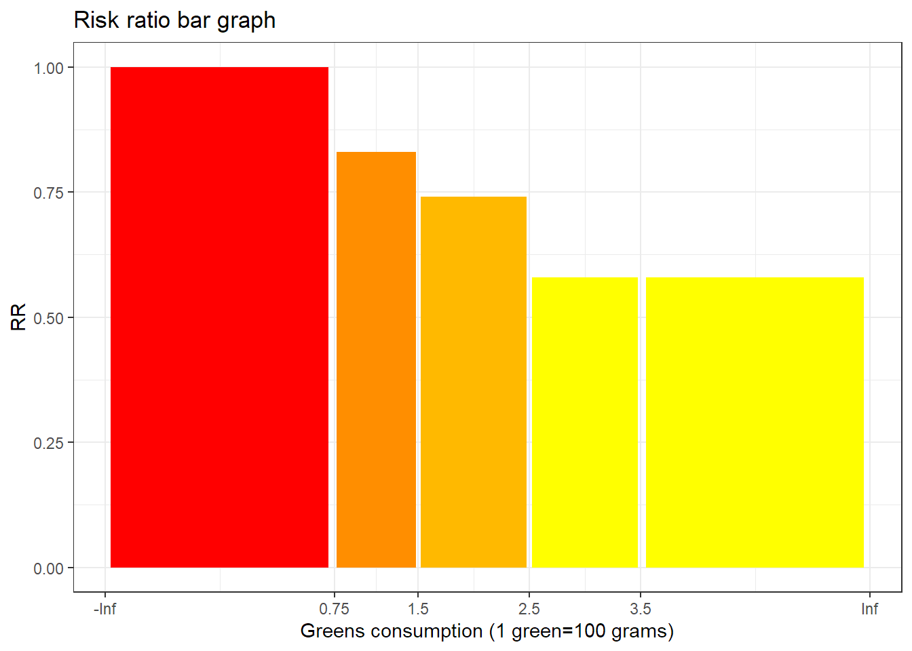
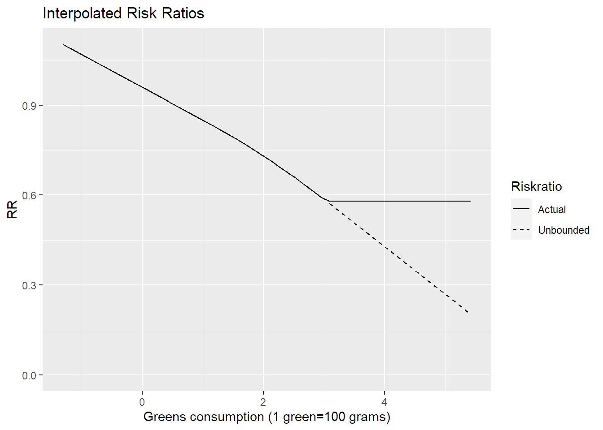

[auto-generated file]
Heart disease is a death cause category. It means that it is a collection of death causes and so we can compute the probability of dying from this death cause category by adding up all of its death causes.
Heart disease consists of the following causes
The combined risk ratio of all risk factors is computed using the formula
\[ RR=RR_{\text{Greens}} \]
The normalization factor is based on the joint distribution of all the risk factors and is computed using the formula
\[ P=P_{\text{Greens}} \]
Greens consumption is a risk factor for Heart disease.
Below is a plot of the risk ratios we have taken from the literature alterated to fit our model

Because the variable Greens consumption is numeric, we have computed a smoothed approximation. 